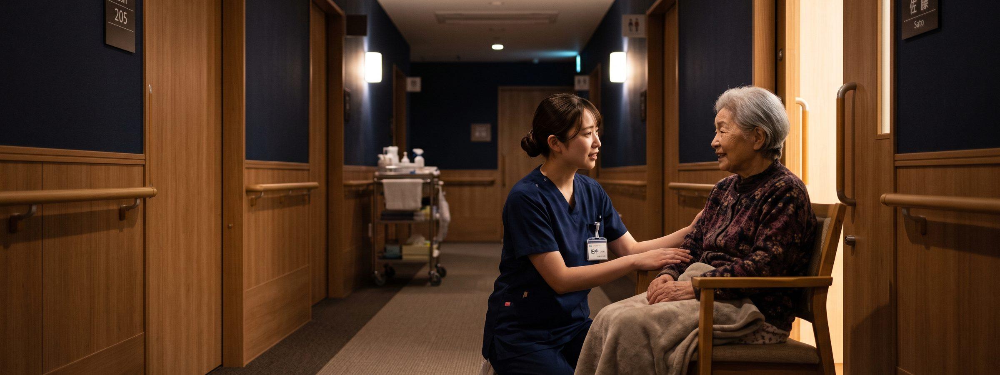

夜勤は、自分で選べる。
特養・老健・デイ・訪問介護まで。介護の求人を毎日更新。会員登録なしで直接応募できます。

気になっていることから
いま気になっている点から
応募前に確かめたくなる条件ごとに、求人をまとめました。
夜勤なしで働ける求人（6件）
デイサービス・訪問介護・日勤限定シフトなど、夜勤が発生しない求人です。


資格・経験を給与に反映する求人（5件）
介護福祉士・ケアマネージャー・看護師など、保有資格が手当として明示されている求人です。
無資格・未経験から始められる求人（3件）
資格不問で応募でき、入職後に資格取得を支援する制度がある求人です。
前職から探す
未経験でも、ゼロからではない
介護に入る人の3人に1人は他業種から。前職はここで活きます。
前職
トラック・配送ドライバー
介護では
時間どおりに回り切る段取りが、そのまま強みになります
決まった順番で決まった時間に回る仕事の進め方は、シフト制の介護現場とほぼ同じです。送迎のあるデイサービスなら、普通自動車免許がその日から戦力になります。
相性のいい職場：デイサービス／訪問介護486件
前職
飲食店ホール・調理
介護では
立ち仕事の体力と、同時に何人も見る力が活きます
ピーク時に複数のテーブルを同時に見ていた人は、フロアに複数の入居者がいる状況に慣れるのが早い傾向があります。食事介助や口腔ケアの理解も早く進みます。
相性のいい職場：特別養護老人ホーム／有料老人ホーム612件
前職
販売・接客
介護では
相手に合わせて話し方を変える力が、そのまま評価されます
介護は身体介護の前に、まず信頼関係の仕事です。ご家族への説明や認知症の方への声かけで、接客で身についた距離の取り方がそのまま効きます。
相性のいい職場：サービス付き高齢者向け住宅／デイサービス548件
前職
工場・製造
介護では
手順を崩さない正確さは、介護でも同じ価値があります
介護は手順とリスク管理の仕事でもあります。決められた方法を毎回そのとおりに続けられる人は、事故の少ない現場をつくれます。
相性のいい職場：特別養護老人ホーム／介護老人保健施設394件
前職
事務・オフィスワーク
介護では
記録と調整の速さが、そのまま武器になります
介護の業務時間の3割前後は記録と連絡調整です。書類とPCに慣れている人は、生活相談員やケアマネージャーへ進む道も早くなります。
相性のいい職場：生活相談員／介護老人保健施設268件
前職
病院の看護師
介護では
夜勤とオンコールを手放しても、看護は続けられます
施設看護師は医療処置の種類こそ限られますが、同じ方を何年も見続けられます。夜間は協力医療機関に繋ぐルールを明記し、オンコールなしとしている求人もあります。
相性のいい職場：特別養護老人ホーム／有料老人ホーム824件
勤務シフト・夜勤回数
8 / 8件の求人に掲載（100%）
月あたりの夜勤回数まで記載
給与の内訳
8 / 8件の求人に掲載（100%）
基本給・手当・賞与を分けて記載
1日の流れ
5 / 8件の求人に掲載（62%）
出勤から退勤までの時間割
働く人の声
6 / 8件の求人に掲載（75%）
在職中の職員のコメント
職員構成
8 / 8件の求人に掲載（100%）
職種ごとの人数・平均年齢
選考プロセス
8 / 8件の求人に掲載（100%）
応募から入職までの流れ
職種 × 施設種別
同じ介護職でも、施設が変われば別の仕事
組み合わせごとの件数です。数字からそのまま求人一覧に進めます。
| 職種＼施設種別 | 特養 | 老健 | 有料 | サ高住 | デイ | 訪問 | 合計 |
|---|---|---|---|---|---|---|---|
| 介護職 | 1,004 | 486 | 622 | 372 | 452 | 250 | 3,186 |
| 相談員 | 132 | 118 | 96 | 58 | 108 | — | 512 |
| ケアマネ | 118 | 84 | 104 | 52 | 56 | 24 | 438 |
| サビ責 | — | — | 38 | 74 | 16 | 238 | 366 |
| 管理者 | 42 | 28 | 54 | 22 | 30 | 22 | 198 |
| 看護師 | 546 | 252 | 290 | 178 | 458 | 100 | 1,824 |
| 合計 | 1,842 | 968 | 1,204 | 756 | 1,120 | 634 | 6,524 |
件数は2026年9月7日時点のものです。数値はデモ用のサンプルです。
3つの質問
あなたの条件だと、何件あるか
選ぶたびに件数が変わります。会員登録は不要です。
選んだ夜勤の条件はご利用中のブラウザに保存され、次にお越しいただいたときに引き継がれます。当サイトのサーバーには送信されません。
職種から探す
今の資格で、どこまで狙えるか
必要な資格と平均月給を並べました。数値はデモ用サンプルです。
介護職員・ヘルパー
求人 3,186件平均月給 24.1万円
施設・在宅で利用者の生活を直接支える中心的な職種。無資格から始められる求人が最も多い。
生活相談員
求人 512件平均月給 26.4万円
入退所の調整とご家族対応の窓口。社会福祉士・介護福祉士などの任用資格が必要。
ケアマネージャー
求人 438件平均月給 28.7万円
ケアプランの作成と多職種連携の調整役。介護支援専門員の資格が必須。
サービス提供責任者
求人 366件平均月給 27.2万円
訪問介護の計画作成とヘルパーの育成・シフト管理を担う。介護福祉士が要件。
施設長・管理者
求人 198件平均月給 32.5万円
事業所の運営責任者。人員配置・収支・行政対応までを統括する。
看護師（施設内）
求人 1,824件平均月給 30.8万円
施設内での健康管理・服薬管理・医療連携。病院勤務からの転職も多い。
よくある質問
夜勤・働き方について
夜勤なしの求人だけを探せますか？
はい。トップページの「夜勤で選ぶ」、または求人一覧の「夜勤なし」「日勤のみ」条件で絞り込めます。デイサービス・訪問介護は基本的に夜勤がありません。
夜勤の回数は求人ごとにわかりますか？
掲載施設に月あたりの夜勤回数の記入をお願いしており、記入がある求人は求人カードと詳細ページの「勤務シフト」欄に表示しています。
夜勤専従の求人はありますか？
はい。夜勤のみを担当する働き方の求人も掲載しています。「夜勤専従」の条件で絞り込んでご確認ください。
「1日の流れ」はどの求人にも載っていますか？
掲載施設に任意でご記入いただいている項目のため、すべての求人にあるわけではありません。掲載がある求人はトップページの「1日の流れが載っている求人」からまとめてご覧いただけます。